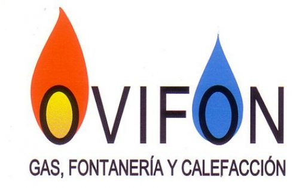

Política de privacidad de OVIFON Presupuestos
OVIFON Presupuestos es una aplicación de uso interno de OVIFON (Luis Fernando Losada Pérez, C/ Fuente de la Plata 91 bajo, 33013 Oviedo, ovifon@gmail.com) para preparar presupuestos de instalación de calderas.
Qué datos usa
Los datos de los clientes (nombre, dirección, teléfono, correo y, si se indica, DNI), los presupuestos y los precios.
Dónde se guardan
En la cuenta de Google Drive de OVIFON, dentro de la carpeta «OVIFON Presupuestos», y una copia de trabajo en el propio dispositivo para poder usar la aplicación sin cobertura. La aplicación no tiene servidores propios y no envía los datos a nadie más.
Permiso de Google
La aplicación pide únicamente el permiso drive.file: solo puede ver y modificar los archivos que ella misma ha creado, no el resto de documentos de Google Drive.
Envío a clientes
Los presupuestos solo se envían cuando el usuario lo decide, usando su WhatsApp o su correo.
Contacto
Para cualquier consulta sobre estos datos: ovifon@gmail.com · 610 70 91 26.